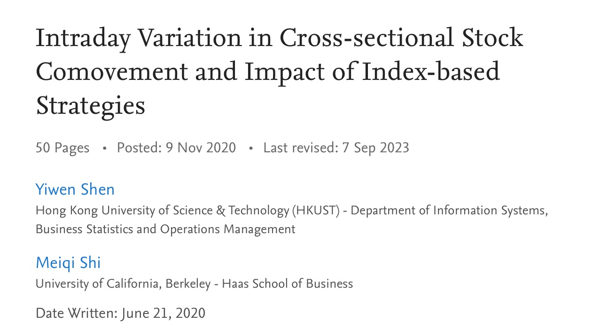

|
|
NotesIntraday Variation in Cross-sectional Stock Comovement and Impact of Index-based Strategies

We investigate how comovement of S&P 500 stocks changes during a day using a large highfrequency dataset and estimators that are robust under microstructure noise and asynchronicity. We find that, in the recent decade, the stock correlation increases substantially throughout the trading session, while the cross-sectional beta dispersion decreases. These patterns suggest that S&P 500 stocks exhibit stronger comovement near the market close. We explain the time-varying comovement by the intraday variation in the composition of index-based and firm-based order flows. A cross-section market impact model with time-varying demand from single-stock and index investors generates the observed intraday patterns. |